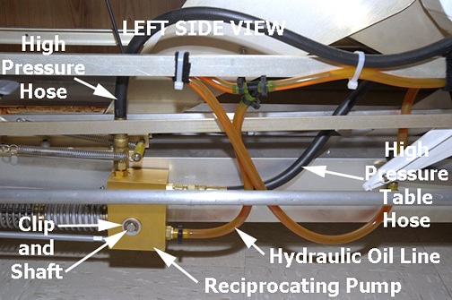
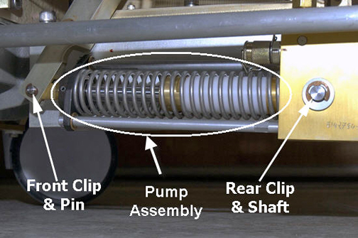
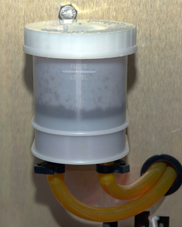

Operating Documentation
Direction 5670006, Rev# 1
Discovery MR750w GEM Service Methods
Module Version 4.0, Version Date 7/25/11
Operating Documentation |
| Required Persons | Preliminary Reqs | Procedure | Finalization |
|---|---|---|---|
| 1 | Not Applicable | 60 mins | Not Applicable |
| Item | Qty | Effectivity | Part# | Manufacturer | |
|---|---|---|---|---|---|
| Clamp | 1 | - | - | - | |
| 3/4 in. Open-End Wrench | 1 | - | - | - | |
| Needle-Nose Pliers | 1 | - | - | - | |
| Item | Qty | Effectivity | Part# | Manufacturer |
|---|---|---|---|---|
| Absorbent Towels | As needed | - | - | - |
| Item | Qty | Effectivity | Part# | Manufacturer | |
|---|---|---|---|---|---|
| Standard Reciprocating Pump Assembly | 1 | Curved Tables | See FRU manual. | - | |
| High Pressure Reciprocating Pump Assembly | 1 | Flat Tables | See FRU manual. | - | |
There are two types of Reciprocating Pump Assemblies depending on the weight rating of the table. The GEM flat table requires the High Pressure Reciprocating Pump, while all curved tables use the Standard Reciprocating Pump.
Undock the patient table and remove it from the Magnet Room.
Remove the upper and lower base covers, referring to Patient Table Upper and Lower Base Cover Removal.
Raise the patient table to the full up position.
| ||||
| Possible PERSONAL INJURY! | ||||
| SEVERE PERSONAL INJURY CAN OCCUR IF TABLE IS ACCIDENTALLY LOWERED DURING MAINTENANCE PERFORMANCE. | ||||
| WHEN PERFORMING MAINTENANCE ON THE TABLE IN ITS UP POSITION, ENSURE THAT THE LOCK Safety BAR IS SAFELY IN PLACE. |
Lower the table Lock Safety Bar.
Illustration 1: Table Lock Safety Bar

Release the hydraulic pressure by gently pressing the Down foot pedal until the table is supported by Lock Safety Latch. Refer to Patient Table Hydraulics Bleeding for details.
Place absorbent towels under the reciprocating pump area, and clamp the hydraulic oil line shown below.
Use a 3/4 inch open-end wrench to disconnect the hydraulic oil hose connection from the pump.
Fasten the end of the hose in an upright position to prevent oil from leaking.
With the open-end wrench, disconnect both black high-pressure hoses from the top and side of the pump.
Illustration 2: Left Side View of Lower Table Chassis

Remove the clip and pin from the front of the pump, then remove them from the rear of the pump.
Slide pump assembly away from the table chassis and remove it.
Illustration 3: Front and Rear Clips, Pin and Shaft

Slide the new pump assembly onto the front pin and rear shaft, and replace the clips on both ends.
Using a 3/4 inch open-end wrench, reconnect both black high-pressure hoses to the top and side of the pump.
Reconnect hydraulic oil line to the pump with the open-end wrench.
Remove the clamp from the hydraulic oil line.
Raise the table Lock Safety Bar to its upright position, and lower the patient table.
Use the Up foot pedal to raise the table to the full up position. Lower table and repeat this process to allow the hydraulic oil to circulate within the pump.
If necessary, add hydraulic oil to the reservoir so it is 1/4 to 1/2 in. (6.5 to 12.5 mm) above the Fluid Level line (shown below) when the table is at its lowest position.
Illustration 4: Hydraulic Fluid Reservoir

Pump the table up, counting the number of pumps it takes to raise the table. (The baseline number is 15, ± one pump.)
Replace the upper and lower base covers.
Return the table to the Magnet Room, and redock the patient table.
No finalization steps.